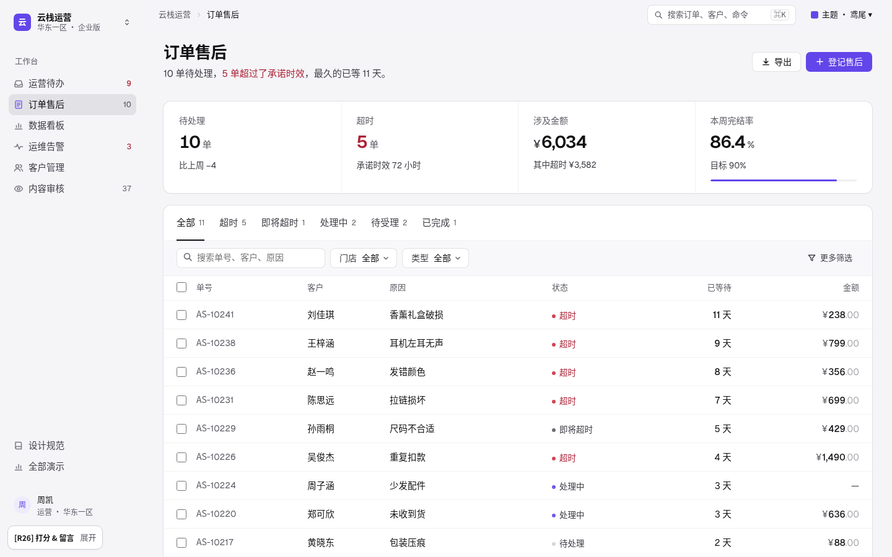
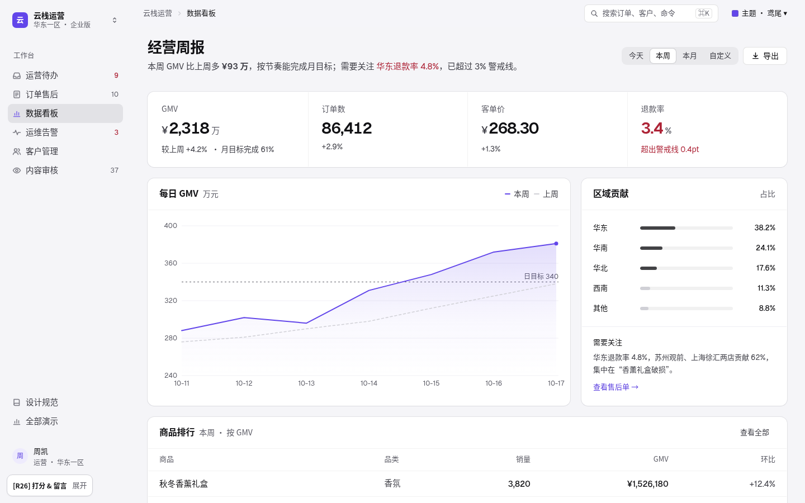
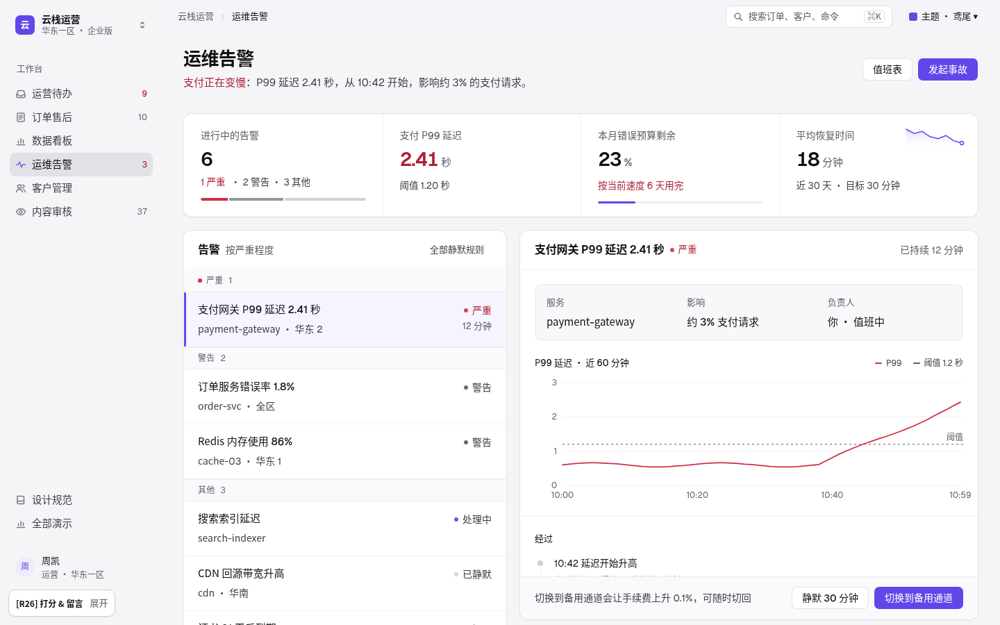
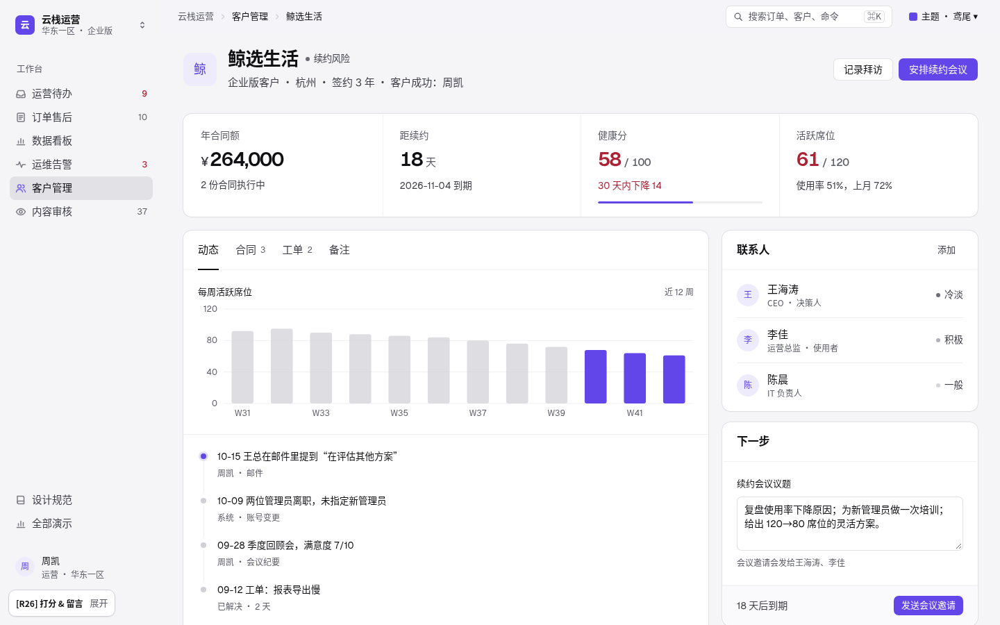
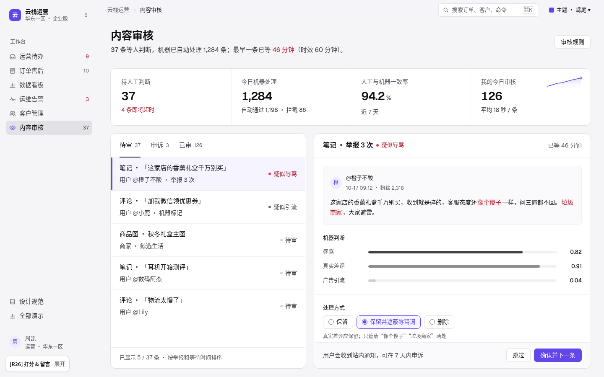

同一套语言，六种后台。
R26「平整」：结构、分组、材质令牌沿用 R25「质感」（灰画布上的白面板、页头一句结论 → 指标面板 → 工作面板、按紧急程度分段的列表），在最后加一层 flat.css，所有控件全平。主按钮是纯鸢尾，悬停和按下各深一阶；次按钮是 1px 透明边；轻按钮只有文字，悬停出现浅色底。分段控件、输入、复选框、头像、侧栏当前项都去掉了渐变、内高光、投影和按下位移。面板只留透明环和 1px 极淡影，深色主题去掉顶边高光，真正的投影只给菜单、⌘K、提示和 Toast。每页都能用 ⌘K 打开命令面板，G + 字母 跳页。默认鸢尾，右上角可换主题。

运营待办列表 + 详情
9 件待办的列表 + 详情；批准 6 笔超时退款，操作栏在详情卡底部，可撤销，J / E 键流转。

订单售后表格
售后单表格：页签、搜索、筛选、勾选后的批量操作条、空状态和分页。

数据看板看板
经营周报：4 个 KPI 带迷你趋势，每日 GMV 面积图（目标线、悬停读数），区域贡献和商品排行。

运维告警列表 + 详情
支付变慢的告警：列表 + 详情，P99 延迟图和阈值线，处理经过，切换备用通道。

客户管理记录详情
鲸选生活的客户档案：续约风险、每周活跃席位、动态时间线、联系人和下一步表单。

内容审核列表 + 详情
内容审核：待审列表，帖子预览高亮命中词，机器判断置信度，处理方式单选和理由下拉。
四种页面模式
| 模式 | 什么时候用 | 主体怎么排（12 栏） | 不变的 | 演示 |
|---|---|---|---|---|
| 列表 + 详情 | 一件件处理、每件都要做决定（审批、告警、审核） | 列表 5 栏 + 详情 7 栏；操作栏在详情卡底部；办完自动选中下一件，可撤销 | 页头 → KPI 数字带 → 主体；浅灰侧栏；没有卡片，只有发丝线；圆点 + 文字状态；Geist 表格数字；一屏一个主操作，带快捷键 | 运营待办 · 运维告警 · 内容审核 |
| 表格 | 同类记录很多，要筛选、比较、批量处理 | 整宽区块：页签 → 筛选条 → 表格 → 分页；勾选后出现批量操作条，写出单数和金额；无结果时给空状态 | 订单售后 | |
| 看板 | 看整体状况、找异常 | 图表 8 栏 + 侧卡 4 栏（区域贡献 + 需要关注），下方整宽排行表；越线才标红 | 数据看板 | |
| 记录详情 | 围绕一个对象（客户、合同）长期跟进 | 页签区 8 栏（趋势 + 动态时间线）+ 侧栏 4 栏（联系人、下一步表单），下方合同表 | 客户管理 |